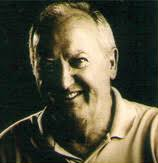

Formación histórica
Toño · Jesús · Fernando · Alfredo
La formación que las fuentes sitúan como la que alcanzó mayor popularidad.
La historia de JUDAS está hecha por distintas formaciones. No completamos nombres, fechas ni biografías a base de suposiciones: esta sección crecerá con documentación y con los recuerdos de los propios músicos.
Toño · Jesús · Fernando · Alfredo
La formación que las fuentes sitúan como la que alcanzó mayor popularidad.
Juan · Manolo · José Luis · Alfredo · Toño · Eduardo
La banda de seis músicos con la que el grupo llegó al medio siglo.

Voz y guitarra · fundador
Uno de los pilares originales del grupo. Las fuentes lo sitúan como cantante y guitarra del cuarteto histórico, y sigue formando parte de JUDAS en la formación de 2025.

Batería · fundador
Fundador y pilar de la banda. Fue el batería del cuarteto más popular. Falleció de forma repentina y su recuerdo estuvo presente en el homenaje del 50 aniversario.
Teclado · formación histórica
Formó parte del cuarteto que alcanzó más popularidad. Tras el parón de la pandemia dejó el grupo, en un momento en el que los fundadores que continuaron buscaron nuevos componentes.
Bajo · formación histórica y actual
Se incorporó al cuarteto histórico como bajista y es, junto a Toño, uno de los músicos que une aquella etapa con la banda de 2025.
Formación 2025
Entró en JUDAS cuando los fundadores que siguieron buscaban nuevos componentes para mantener el grupo en los escenarios. Formó parte de la banda del 50 aniversario en el Teatro Apolo.
Guitarra y saxofón · formación 2025
Uno de los músicos que se sumó en la etapa reciente. Está documentado como integrante de la formación que celebró el medio siglo de JUDAS.
Piano · formación 2025
Componente de la banda actual. Las fuentes públicas lo sitúan en el escenario del 50 aniversario, junto al resto de la formación de 2025.
Sonido e iluminación · formación 2025
Integra la formación de seis con la que JUDAS llegó a 2025. Su incorporación forma parte de la etapa posterior a los cambios que siguieron a la pandemia, y es una gran ayuda como técnico de sonido y luz.